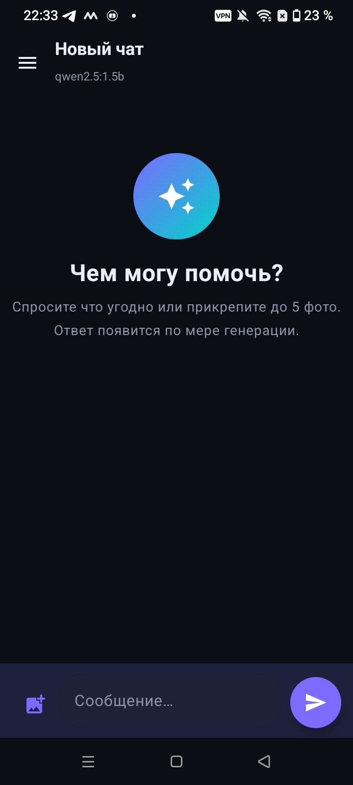
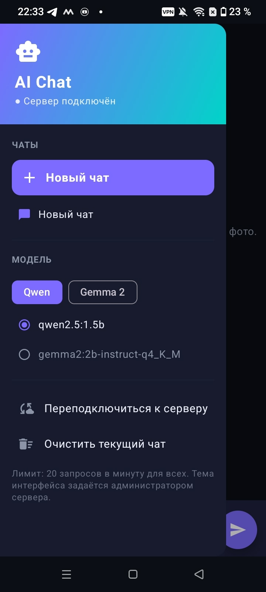
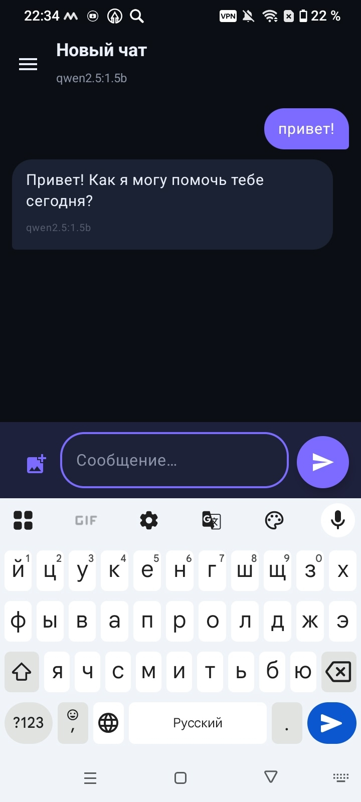
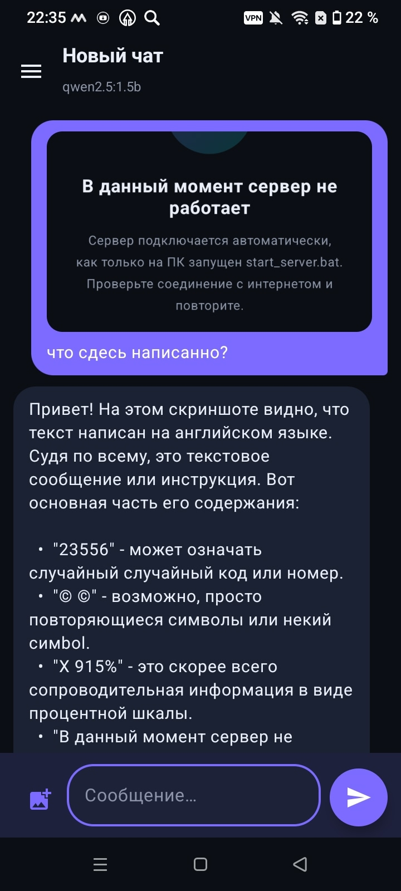
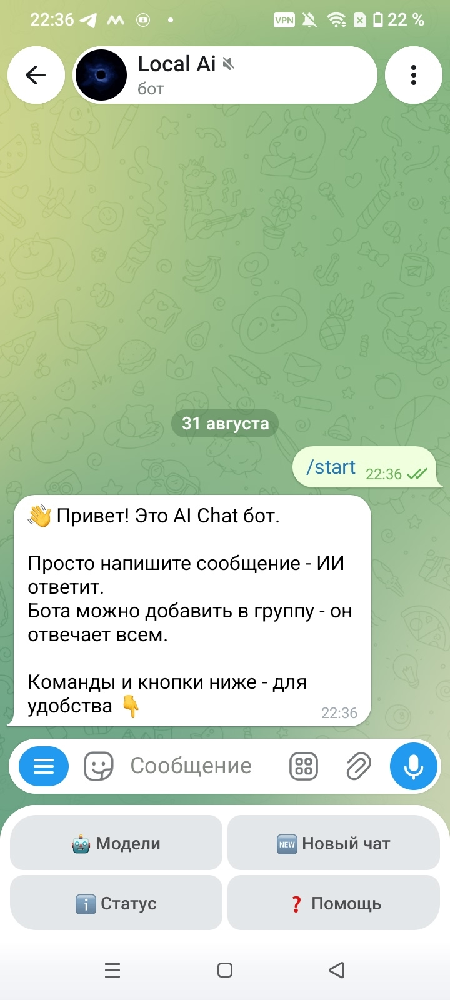
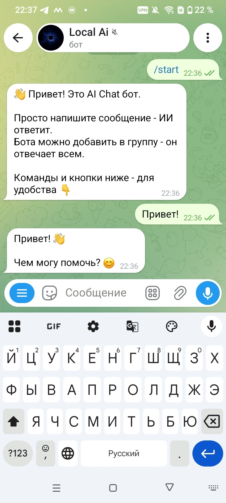

Ты пишешь
Сообщение уходит на сервер, где его встречает модель — Qwen или Gemma 2 на твоём ПК.
Чат-ИИ, который работает на домашнем компьютере: приложение для Android, бот в Telegram и программа для ПК. Без регистрации, без подписок, приватно.
Чат-ИИ — программа, с которой можно разговаривать обычным языком. Внутри — языковая модель: нейросеть, обученная на огромном количестве текстов.
Сообщение уходит на сервер, где его встречает модель — Qwen или Gemma 2 на твоём ПК.
Текст режется на кусочки-токены (~3–4 символа). Модель видит весь диалог целиком.
Модель предсказывает следующий токен снова и снова — так рождается ответ.
Ответ летит по кусочкам ещё во время генерации — видно, как текст «печатается».
Реальные скриншоты приложения и Telegram-бота: тёмная тема, стриминг, распознавание текста с фото, бургер-меню.






Тёмный интерфейс, список чатов, до 5 фото с распознаванием текста, выбор модели, анимации. Скачивается одним файлом APK.
Пиши /запрос и свой вопрос — ИИ ответит прямо в Telegram. Работает в группах, есть кнопочное меню и оповещения о сервере.
Всё то же, но ещё красивее: два режима — обычный ИИ и ИИ-создатель сайтов со встроенным мини-браузером.
Модели крутятся локально на домашнем ПК. Ничего не уходит в облака. Лимит — 20 запросов в минуту для всех.
CatCode — небольшая технологическая компания, которая делает искусственный интеллект доступным каждому. Мы верим, что умные помощники не должны требовать подписок, регистрации и отправки данных в чужие облака.
Наш флагман — экосистема AI Chat: Android-приложение, программа для ПК и Telegram-бот, работающие на локальных моделях Qwen и Gemma 2 через собственный сервер пользователя. Приватность, скорость и красивый интерфейс — в каждом пикселе.
Разрабатываем и поддерживаем всё сами: от дизайна до серверной части. Каждый день улучшаем продукт и слушаем пользователей.
Да! Сам сайт, обучалка и все материалы доступны всегда. А вот чат (в приложении, боте или на ПК) отвечает только когда на компьютере запущен start_server.bat — тогда приложения подключаются автоматически.
Токен — кусочек слова (3–4 символа), из которых модель собирает ответ. Контекст — «память» диалога: модель видит предыдущие сообщения. Новый чат = чистая память.
Если сервер выключен — приложение покажет код ошибки: 404 (нет интернета), 1001 (сервер нестабилен), 103 (отключён админом), 51 (экстренно закрыт разработчиком). Запусти start_server.bat — всё оживёт.
Полностью. Модели open-source и работают на твоём железе. Никаких подписок и отправки данных в облако.
Выбирай любой способ — везде один и тот же умный ИИ.